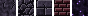
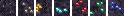
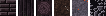
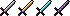

Хранилище текстур
Категория: Фэнтези · Версия игры: 1.20.1
◆
Проклятый камень

Холодные своды подземелий, кирпичи цвета запёкшейся крови и обсидиан с фиолетовыми искрами.
СкачатьСветящиеся руды

Самоцветы мерцают в тёмном камне, и их видно даже в самой глубокой шахте.
СкачатьМёртвый лес

Почерневшее дерево, поросшая мхом кора и пепельный песок с тлеющими угольками.
СкачатьКлинки тьмы

Мечи с камнем в гарде и кожаной рукоятью. На незеритовом клинке светятся руны.
СкачатьНичего не найдено. Попробуй другое слово.
◆
Хочешь всё сразу? Скачай общий пак со всеми текстурами.